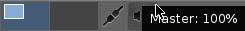
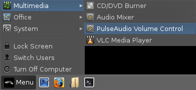
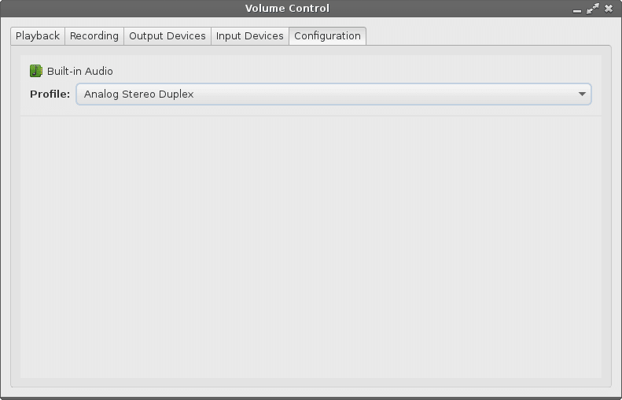
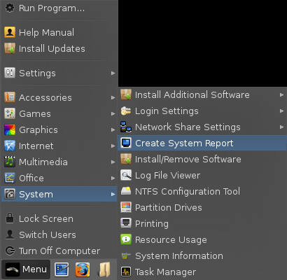
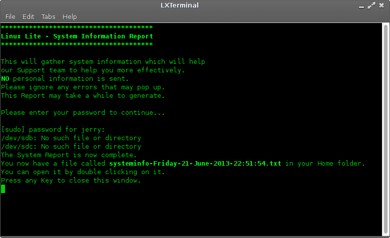
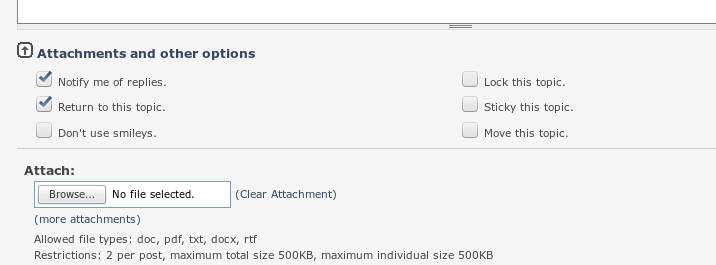

Hardware
Sound Configuration
Printer Setup
Graphic Drivers And Setup
- Intel
- ATI
- NVIDIA
- NVIDIA-Optimus
Wireless Devices
Keyboard Hotkeys and Multimedia Keys
Booting issues
Create System Report tool
Finding more help
Drivers
Wireless
To be written.
To be written.
If you're not sure whether or not you have ATI graphics, open up a terminal and run this command:
sudo lshw -C display

You can see that under product: there is a reference to
Radeon, a brand of ATI.
NOTE: You must be connected to the internet before you start
the driver install.
The next step is to go to Menu, System, Install Drivers.

You will be asked to enter your password.
The program will then scan your computer for any drivers that you may need.

When it has finished scanning, you will see a dialogue box similar to the one below.
For ATI, we would select: ATI/AMD proprietary FGLRX
graphics driver (second in the list)
If you plan to play Steam games in the future, select:
ATI/AMD proprietary FGLRX graphics driver (**experimental**
beta) Now click on Activate.
When the driver has finished, click on Close.
Now open up a terminal and type:
sudo aticonfig --initial -f
enter your password, when it has finished, restart your
computer.
Now we need to make sure that our new Menu entries launch correctly. Go to Menu, Settings, Main Menu.

A new window will pop up, select Settings on the left
then the first AMD menu entry on the right and click on
Properties.
This will bring up a new window, edit each field so that it
looks the same as in the picture below. When you have finished
editing, click on Save on the Edit launcher
window.
Now click on the second AMD menu entry on the right and click
on Properties.
This will bring up a new window, edit each field so that it
looks the same as in the picture below. When you have finished
editing, click on Save on the Edit launcher
window. Now click on Close on the Main Menu
window.
The AMD Catalyst menu item will let you configure your graphics, with limited access in the Catalyst Control Center.
The AMD Catalyst Admin will give you full access to all the settings in the Catalyst Control Center including options like Switchable Graphics if you have it. You will need to enter your password to access this control panel.
If you're not sure if your graphics card is Nvidia or not, open up a terminal and run this command:
sudo lshw -C display
You see under product: Nvidia or GeForce (and similar naming schemes for Nvidia cards) depending on your card. The vender: line may also show you the Product or Company name.
Yadda Yadda not done yet, chair broke.
From a fresh install of Linux Lite, open up a terminal and type:
| sudo add-apt-repository ppa:bumblebee/stable sudo apt-get update sudo apt-get install bumblebee virtualgl linux-headers-generic-lts-quantal |
Now restart your computer.
1. The Audio Icon can be found in the lower right hand corner, commonly referred to as the system tray.
2. Hovering over the icon will show you the volume currently set, If you left click it will toggle mute and unmute for the Master volume. Volume can also be adjusted up and down my using your mouse scroll wheel while hovering over the icon. Scrolling up brings the master volume up, and down accordingly.

3. Right clicking on the sound Icon will bring you a menu with a few options, you can select Properties to adjust a few options.
4. You can select Sound card, Mixer, and what command the Left click uses.
Generally You will not need to adjust any of the settings aside from selecting Sound card.
5. If your unable to hear any sound, or you just want to check and adjust settings. You would need to open the audio settings with PulseAudio Volume Control.
Navigate to the Menu Under the Multimedia Section locate and open PulseAudio Volume Control

6. You will be brought to a window similar to this one. On the tabs you will see Playback, for adjusting the volume of programs currently playing or capable of playback. Recording for programs currently using recording devices, namely your microphone. Output Devices is for main configuration of sound levels across your system. Configuration Is used for selecting Profiles and misc settings.
7. In the window above you can adjust volume settings for output. Using the blue sliding bars. You can toggle mute with the speaker icon  It will change it's background color when active . You can lock channels using So that when volume is raised or lowered its done
equally. Or you can toggle and set the volume to be louder on one side. The icon is used to specify the default device used by pulse audio.
It will change it's background color when active . You can lock channels using So that when volume is raised or lowered its done
equally. Or you can toggle and set the volume to be louder on one side. The icon is used to specify the default device used by pulse audio.
8. Input Devices, this includes Microphones and other line in devices, such as TV tuner cards with line in etc. Adjusting the levels and settings are the same method as described above in section 7.
9. Configuration, this lists known profiles for your sound card. In most cases there is no need to select anything here unless you intend to disable your sound completely, or have a unique profile setting. Such as surround sound, mono, or
stereo out.

10. Recording, will list programs currently in using an input method, be it line in or a microphone. You can toggle access per program or and adjust volume per program here. The method used is the same as mentioned in section 7.
11. Playback, will list programs currently producing audio or able to. You can toggle access per program or and adjust volume per program here. The method used is the same as mentioned in section 7.
12. Notes: Being able to toggle on mute and unmute on multiple things can cause issues. And at times the device may be muted upon install. Show caution here as you may mute a certain program and forget about it entirely. If unmuting and adjusting settings for your sound card and related programs do not work at all, there may be a driver issue. Refer below for resources on how to remedy this. You can find help by using the Create System Report tool And using the directions to upload the generated report to the forums.
Resources for Audio Drivers
Ubuntu Wiki Contains a list of guides to configuring specific drivers for older and odd sets of sound cards.
Ubuntu Wiki Contains steps to help trouble shoot and configure sound cards.
Halfgaar Has a great guide to setting up surround sound under linux.
More surround sound help from here.
1. Plugging in a printer will prompt a dialog if detected and attempt to find a matching driver. (If your driver was
plugged in during your initial install you may not see a prompt, you may refer to step 3 below.)

2. If a printer and driver has been detected you will see this dialog. (Note, the dialog should appear in
upper right of your screen)
3. You can further configure or manage printing jobs or printers by going to printing located in
Menu> System> Printing.

4. Once you open the Printing menu it will bring you to a simple dialog to select view and manage options related to your printer.

5. You can find options for a printer by highlighting (single clicking) on the icon of the printer you wish to manage.
6. If a printer if not listed in the window after opening it you will need to plug in the device and click on the + sign located below the menu.

7. Once you click on the + sign above, you will see this window. If the Printer was detected properly. You can then select the method of connect and printer on the pane near the bottom of the window. (You may see more then one option if your device is an all in one device, so select from the left pane carefully.) From here you can also Select Network printers if you are connected to a home network and printer is available.
7.1 If for some reason you are unable to see network printer on a machine using
Windows you may need to configure samba (a sharing and networking tool for Linux >
Windows) You can find help doing this
here, as well as a thread for samba on the Linux Lite forums
here.

8. Clicking Forward on the above window will bring you to this window where you can
set the Printer Name, Description and Location for the printer.
However Description and Location are not required, unless you share a printer or use one over a network.

9. Administration of Cups can also be handled by the web interface by clicking
here
Resources for compatible printers
Open Printing Printer listing. Driver listing can also be found
here
HP
Compatible printers can be found here.
Ubuntu's Wiki also contains a list of known working and compatible drivers and printers.
TurboPrint - Also
offers a paid software alternative that has up to date drivers for Brother,
Canon, Epson & HP.
To be written.
You can find information for adding or modifying hotkeys (or shortcuts) on the XFCE wiki
Black screen whilst trying to boot live DVD/USB
This is usually due to the graphics chip you have, it is easily remedied and the problem should not reappear once you have installed the graphics drivers for your computer. So first we need to boot you successfully into the desktop.
Hold down the shift key as you boot up your computer. You should see a screen like the following:

Next press the e key whilst that top line is highlighted. This
will take you to the next screen.
Use your arrow keys to move down to the line highlighted in the
picture below. Use the arrow key until you reach the end of that
line.

Press the backspace key repeatedly until you remove: ro
splash quiet $vt_handoff and replace that
text with: nomodeset so that it looks like the picture
below.
Now press either F10 or Ctrl+X to boot your
machine.
Your computer will begin to boot up with scrolling text similar
to what is shown below:
After which shortly you will get your normal login screen. Now you can login and install your graphics drivers.

The Create System Report tool was created to better help people who experienced a problem with their computer. The report contains useful information about the hardware, network and software. The idea of the tool is to run it, then you would attach the generated file to a Forum thread with a title about the issue you are having. Lets get started.
Click on Menu, System, Create System Report.

A terminal will pop open, read the information in the window and enter your password when ready.

The report will take anywhere from a few seconds to less than a minute depending
on your hardware.
When it is finished you will see a screen like below.

You can see that it says, 'You now have a file called systeminfo-Friday-17-May-2013-23:41:10.txt in your Home folder.'
Here is the file:

Go to the Linux Distro Community Forums and then to the Linux Lite Support section. A link is provided here - https://www.linuxdistrocommunity.com/forums/forumdisplay.php?fid=62 Start a new thread with an accurate Title description of the problem you are having, then a detailed write up of your problem. At the bottom of the page you will see where you can add attachments. Browse to your Home folder and select the report, then click on Add Attachment.
Now click on Post Thread, and someone will help you as soon as they're available.

Feel free to seek advice or help on the forums at any point. Or use any other means of support or contact located here. If you can not find a solution contained in this page or links of related information.